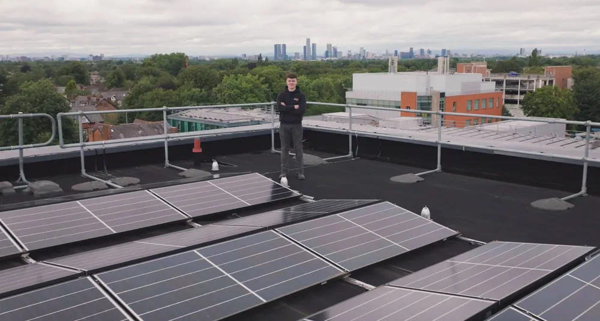
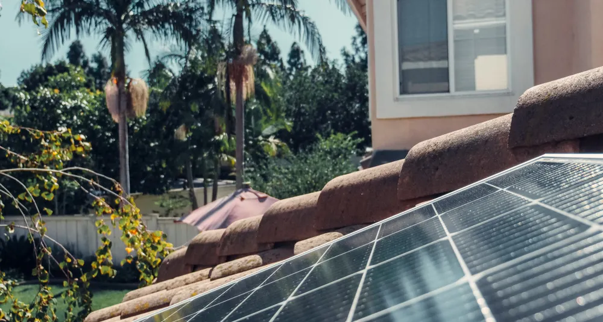
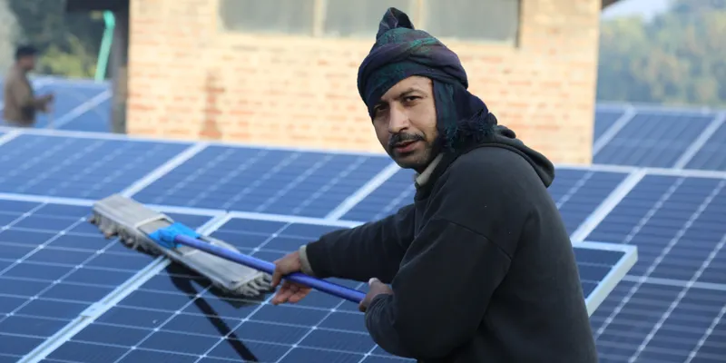
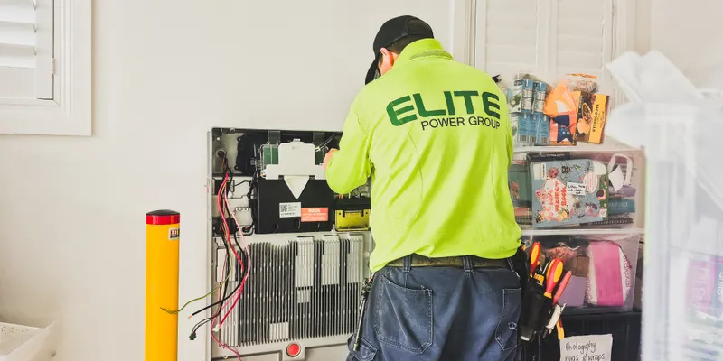
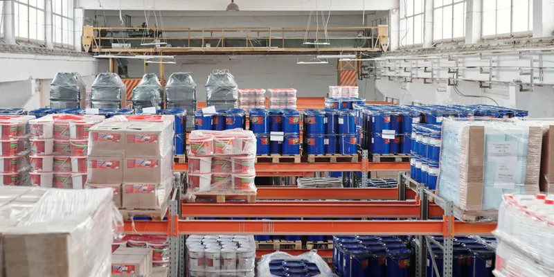
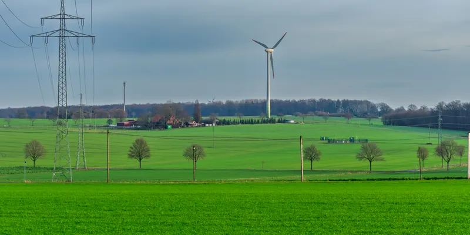
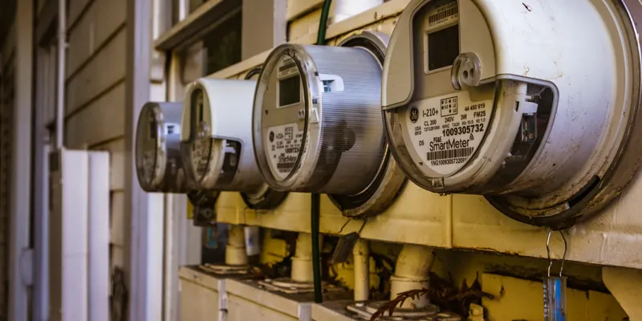

01
Solar
How to size a solar system for your home
A practical look at electricity usage, roof space, system capacity, and the factors that determine the right solar array for a property.
Read article →Field notes, cost breakdowns and policy updates from our engineers and installers — written for homeowners and business owners weighing a switch, with no jargon and no sales pitch.


A plain-language walkthrough of the current federal credit, what qualifies, and how to claim it on your return. We cover batteries, roof work and what happens if you move.
We also flag the common mistakes that cost homeowners part of their credit each year.
Read the articleLatest from the team.

Rain does most of the work. Here is when a manual clean actually pays off, and when it risks damage.

How we translate a year of utility bills into a battery recommendation you can trust.

A week-by-week look at the Harbor Logistics project from permit to power-on.

A practical checklist for choosing between the two, or combining them.
How backup batteries behave when the neighbourhood goes dark.

What twelve years of our own field data says about degradation.
A practical look at electricity usage, roof space, system capacity, and the factors that determine the right solar array for a property.
Read article →From panel orientation and shading to inverter selection and system monitoring, explore the engineering decisions behind better output.
Read article →Solar production changes with seasons, weather, daylight hours, and site conditions. Here's what homeowners should expect.
Read article →Learn how wind resource, tower height, site conditions, and local regulations affect the feasibility of a residential wind system.
Read article →Combining renewable generation sources can create a more flexible energy system when designed around the property's actual load profile.
Read article →A closer look at wind speed, turbulence, turbine placement, and the conditions that influence annual energy production.
Read article →Understand how batteries store excess solar energy and deliver it back to your home when generation is unavailable.
Read article →Battery sizing depends on energy consumption, backup requirements, solar production, and the loads you want to support.
Read article →Explore how properly configured storage can provide backup power for selected household circuits during grid interruptions.
Read article →A plain-language guide to the incentives, rebates, credits, and local programs that may affect the economics of an energy project.
Read article →Interconnection requirements, export rules, and utility programs can all influence how a system is designed and operated.
Read article →Understand how exported solar electricity may be credited and why compensation structures vary between utilities and regions.
Read article →Most modern solar systems require limited routine maintenance, but monitoring and periodic inspection remain important for performance.
Read article →Learn which changes in production, alerts, equipment behavior, or physical conditions may warrant a professional inspection.
Read article →Monitoring, equipment checks, clean electrical connections, and timely service can help maintain system performance over its operating life.
Read article →Follow the major stages of an installation, from the initial site survey through mounting, wiring, commissioning, and activation.
Read article →Real-world properties rarely have perfect roofs. Here's how installers approach complex layouts, obstructions, and difficult access.
Read article →A behind-the-scenes look at the technical decisions and quality checks that happen before a new energy system goes live.
Read article →Practical guides, field insights, and energy explainers our readers return to most often.
Most renewable-energy content online is either marketing or academic. We wanted something in between: honest, specific and grounded in real installs we have done.
Every article is reviewed by an engineer, and we correct mistakes publicly in a running changelog at the bottom of the piece.
Engineers and installers sharing practical knowledge from the projects they actually work on.
Head of Engineering — policy, incentives, system design and technical planning for residential energy projects.
Head of Install — field notes covering real project sites, installation challenges and practical construction decisions.
Service lead — maintenance, troubleshooting, performance checks and keeping energy systems running reliably over time.
Longer references, checklists and practical resources worth bookmarking.
Can't find the answer you're looking for? Send us your question and our engineering team can point you in the right direction.